第01讲 认识方程
第01讲 认识方程
课程标准 | 学习目标 |
①掌握方程、一元一次方程的定义 ②理解方程的解与解方程 | 1. 掌握方程、一元一次方程的定义． 2. 理解方程的解与解方程． |
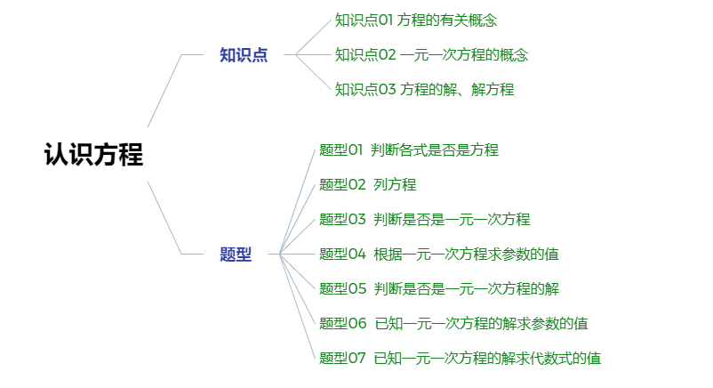

知识点01 方程的有关概念
定义：含有未知数的等式叫做方程.
【说明】判断一个式子是不是方程，只需看两点：一是等式；二是含有未知数．
【即学即练1】
1．（23-24六年级下·全国·假期作业）已知下列式子： ．其中方程的个数为（ ）
．其中方程的个数为（ ）
A．3 B．4 C．5 D．6
【答案】C
【知识点】判断各式是否是方程
【分析】本题考查的是方程的定义，根据方程的定义对各选项进行逐一分析即可．
【详解】解：
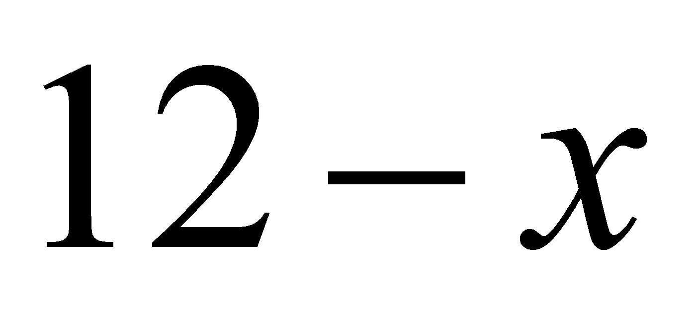
不是等式，所以它不是方程；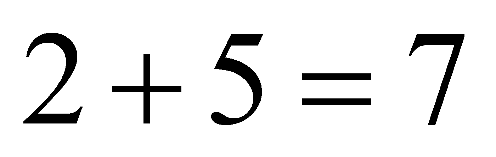
是等式，但其中不含未知数，所以它不是方程；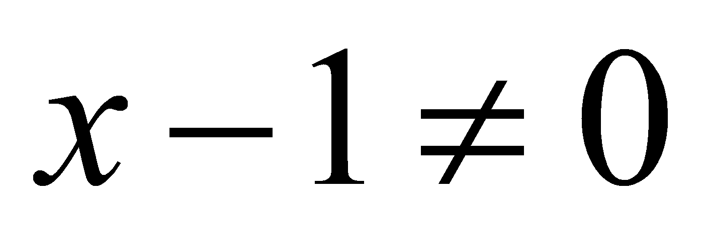
不是等式，所以它不是方程；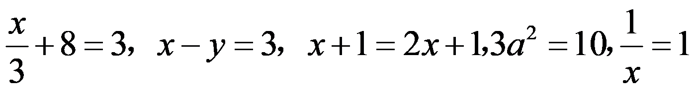
都具备方程的两个条件，所以都是方程．故选：C．
知识点02 一元一次方程的概念
定义：只含有一个未知数（元），并且未知数的次数都是1，这样的方程叫做一元一次方程.
【说明】“元”是指未知数，“次”是指未知数的次数，一元一次方程满足条件：
①首先是一个方程；②其次是必须只含有一个未知数；③未知数的指数是1；④分母中不含有未知数．
【即学即练2】
1．（23-24六年级下·上海松江·期中）下列式子：① ；②
；② ；③
；③ ；④
；④ ；⑤
；⑤
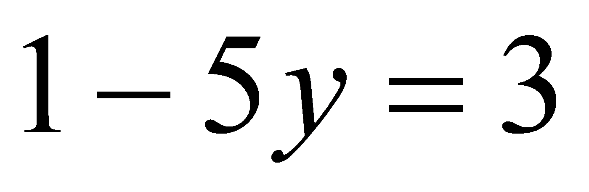
；⑥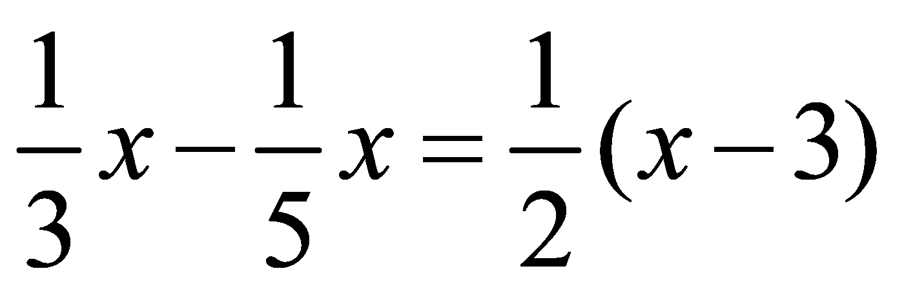
中，一元一次方程共有（ ）A．1个 B．2个 C．3个 D．4个
【答案】C
【知识点】一元一次方程的定义
【分析】本题考查的是一元一次方程的定义，熟知只含有一个未知数（元），且未知数的次数是1，这样的方程叫一元一次方程是解题的关键．
根据一元一次方程的定义进行分析即可．
【详解】解：①是代数式，不是方程，不合题意，
②是不等式，不合题意，
③，去括号为
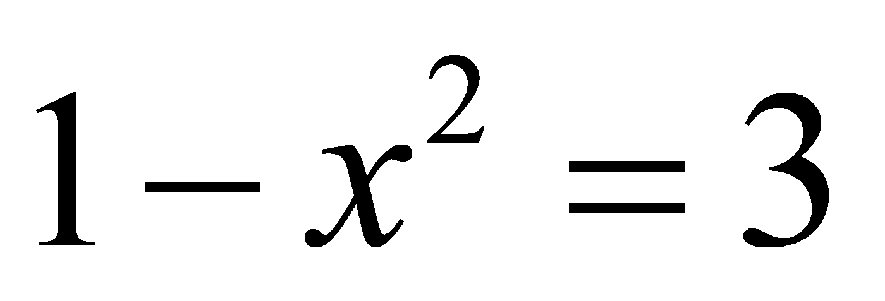
，未知数的次数是2，不合题意，④是一元一次方程，符合题意，
⑤是一元一次方程，符合题意；
⑥是一元一次方程，符合题意；
故选：C
2．（23-24七年级下·四川乐山·期末）已知关于 的方程
的方程
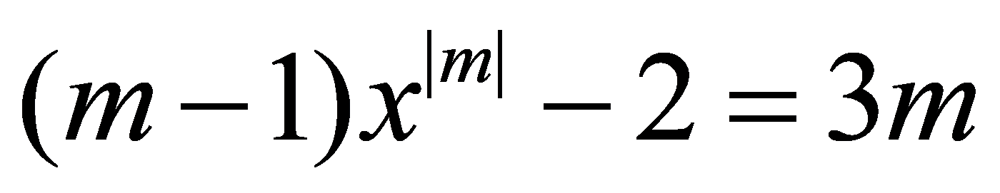
是一元一次方程，则实数 的取值是（ ）
的取值是（ ）A．1 B． C．1或 D．0
C．1或 D．0
【答案】B
【知识点】一元一次方程的定义
【分析】本题考查了一元一次方程的定义，根据含有一个未知数并且未知数的次数为1的整式方程，据此即可作答．
熟练掌握一元一次方程的定义是解题的关键．
【详解】解：∵关于的方程是一元一次方程，
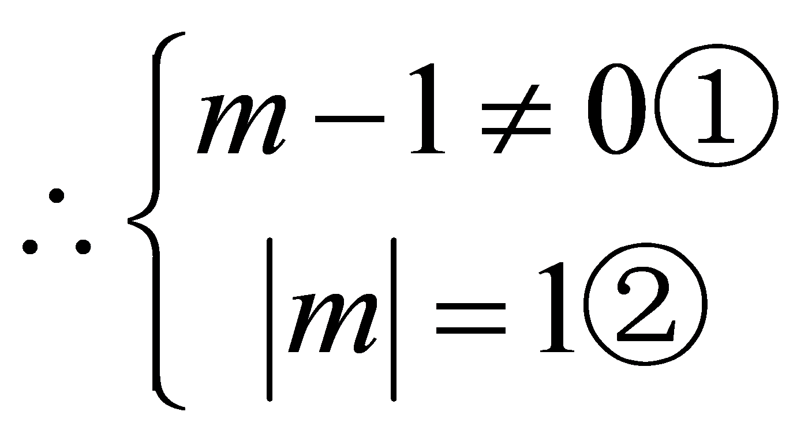
，由①得 ，
，
由②得 ，
，
综上， ．
．
故选：B．
知识点03 方程的解、解方程
1.方程的解：使方程左右两边的值相等的未知数的值，叫做方程的解.
2.解方程：求方程的解的过程.
【即学即练3】
1．（23-24七年级下·广东珠海·开学考试）下列方程中，解为 的方程是（ ）
的方程是（ ）
A．
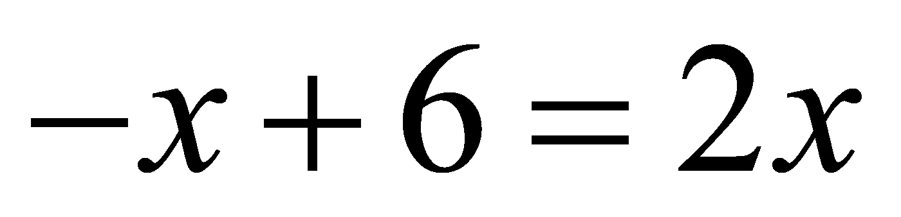
B． C．
C． D．
D．
【答案】A
【知识点】方程的解
【分析】本题考查了一元一次方程的解的定义，使方程左右两边相等的未知数的值即为方程的解，把代入各个选项中，比较方程左右两边的值，即可作答．
【详解】解：A、把代入，则 ，左右两边相等，故该选项是正确的；
，左右两边相等，故该选项是正确的；
B、把代入，则
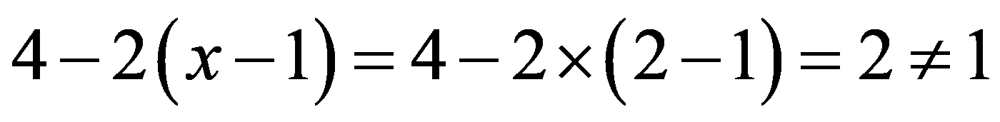
，左右两边不相等，故该选项是错误的；C、把代入，则
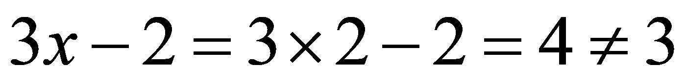
，左右两边不相等，故该选项是错误的；D、把代入，则 ，左右两边不相等，故该选项是错误的；
，左右两边不相等，故该选项是错误的；
故选：A

题型01 判断各式是否是方程
【典例1】（2024七年级上·江苏·专题练习）下列式子中，方程的个数是（ ）
① ；②
；②
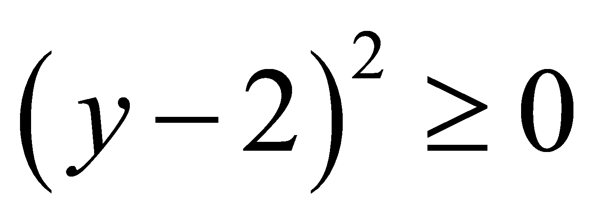
；③ ；④
；④ ；⑤
；⑤ ；
；A．2 B．3 C．4 D．5
【答案】A
【知识点】判断各式是否是方程
【分析】本题考查方程的定义，掌握含有未知数的等式叫做方程是解题的关键．
根据方程的定义求解即可．
【详解】解：①中不含有未知数，不是方程；
②不是等式，不是方程；
③、④符合方程的定义；
⑤是代数式，不是等式，不是方程；
综上，方程有2个．
故本题选：A．
【变式1】（2024七年级上·江苏·专题练习）在 ；
； ；
； ；
； ；
； 中，方程有（ ）个．
中，方程有（ ）个．
A．2 B．3 C．4
【答案】A
【知识点】判断各式是否是方程
【分析】本题考查了方程的定义，熟知方程的定义是解题的关键．
含有未知数的等式叫做方程，由此判断即可．
【详解】解：方程有：，，共2个，
故选：A．
【变式2】（24-25九年级上·全国·单元测试）下列各式 ，
， ，
，
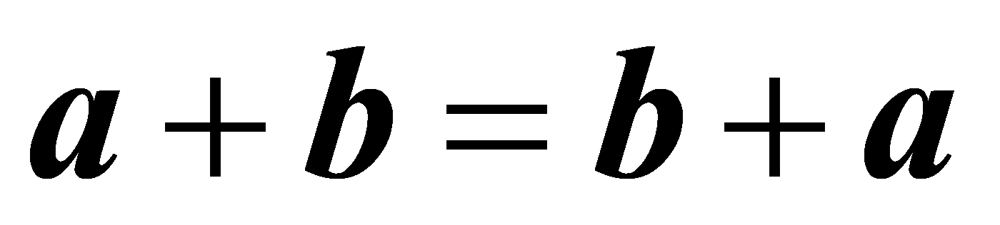
（a，b为已知数）， ，
， 中，方程有（ ）
中，方程有（ ）A．1个 B．2个 C．3个 D．4个
【答案】C
【知识点】判断各式是否是方程
【分析】本题考查了方程的定义，含有未知数的等式叫做方程．根据方程的定义可以解答．
【详解】解：，，，这3个式子即是等式又含有未知数，都是方程．
不是等式，因而不是方程．
（a，b为已知数）不含未知数，所以不是方程．
故有3个式子是方程．
故选：C．
【变式3】（23-24七年级上·全国·单元测试）下列各式：①  ；②
；②
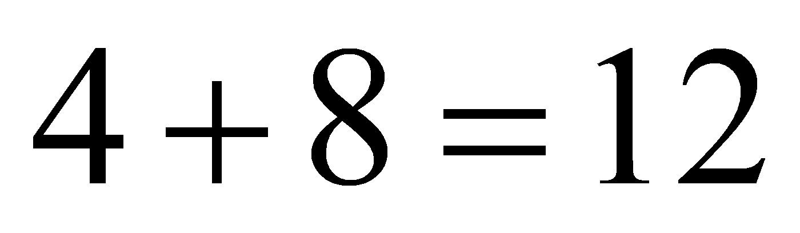
；③ ；④
；④  ；⑤
；⑤  ；⑥
；⑥  ；⑦
；⑦  ；⑧
；⑧ 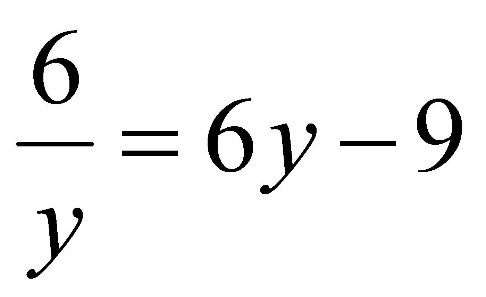
．其中是方程的有（ ）A．①②④⑤ B．①②⑤⑦⑧ C．①④⑦⑧ D．8 个都是
【答案】C
【知识点】判断各式是否是方程
【分析】本题考查方程的定义，根据含有未知数的等式，叫做方程，进行判断即可。
【详解】解：①符合方程的定义，故本小题正确；
②不含有未知数，不是方程，故本小题错误；
③不是等式，故本小题错误；
④符合方程的定义，故本小题正确；
⑤不是等式，故本小题错误；
⑥不是等式，故本小题错误．
⑦符合方程的定义，故本小题正确；
⑧ 符合方程的定义，故本小题正确．
故选C．
题型02 列方程
【典例2】（23-24七年级下·全国·期末）列等式表示“的2倍与10的和等于8” ．
【答案】
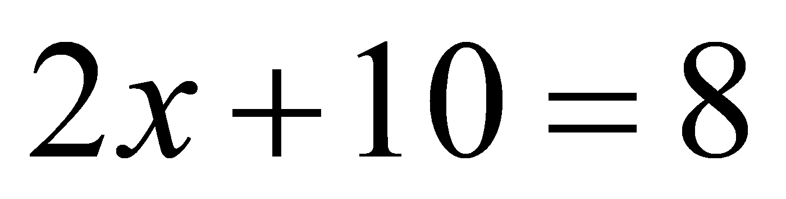
【知识点】列方程
【分析】此题考查了列方程，根据题意列出方程即可．
【详解】解：由题意可得，，
故答案为：
【变式1】（23-24六年级下·全国·单元测试）设某数为x，如果某数的2倍比它的相反数大1，那么列方程是 ．
【答案】
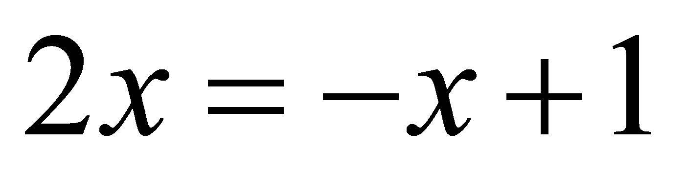
【知识点】列方程
【分析】本题主要考查了一元一次方程的应用，数x的2倍为 ，相反数为
，相反数为 ，据此根据题意列出方程即可．
，据此根据题意列出方程即可．
【详解】解：由题意得， ，
，
故答案为：．
【变式2】（22-23七年级下·广东河源·开学考试）一个长方形场地的周长为 米，长比宽的
米，长比宽的 倍少
倍少 米．如果设这个场地的宽为米，那么可以列出方程为 ．
米．如果设这个场地的宽为米，那么可以列出方程为 ．
【答案】
【知识点】列方程
【分析】设这个场地的宽为米，则长为
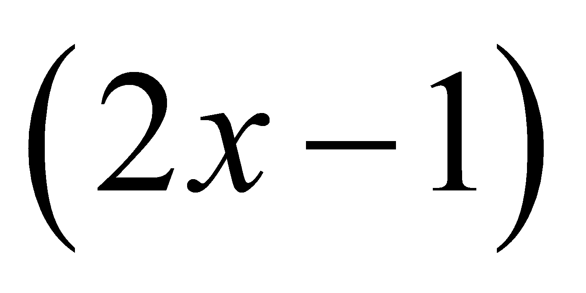
米，然后根据长方形的周长公式即可解答．【详解】解：设这个场地的宽为米，则长为米，
由题意可得：．
故答案为．
【点睛】本题主要考查了列一元一次方程，审清题意、设出未知数、明确等量关系是解答本题的关键．
【变式3】（23-24八年级上·陕西咸阳·期中）蛋白质和碳水化合物是我们日常饮食中的两个重要组成部分，它们都是身体所需的营养素，能够为我们提供能量，一瓶牛奶的营养成分中，碳水化合物含量是蛋白质的 倍，碳水化合物，蛋白质与脂肪的含量共
倍，碳水化合物，蛋白质与脂肪的含量共 ．设蛋白质的含量为
．设蛋白质的含量为 ，脂肪的含量为
，脂肪的含量为
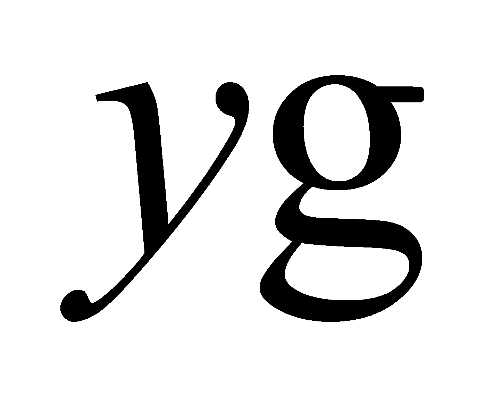
，可列出方程为 ．【答案】
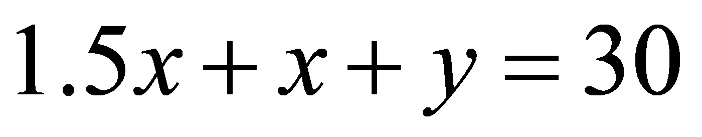
【知识点】列方程
【分析】本题考查了由实际问题抽象出二元一次方程，根据碳水化合物、蛋白质与脂肪的含量共列方程，解题的关键是读懂题意，找出合适的等量关系，列出方程．
【详解】解：设蛋白质的含量为，脂肪的含量为，则碳水化合物含量为 ，依题意可列方程，，
，依题意可列方程，，
故答案为：．
题型03 判断是否是一元一次方程
【典例3】（23-24七年级上·贵州遵义·期中）下列方程是一元一次方程的是（ ）
A． B．
B． C．
C．
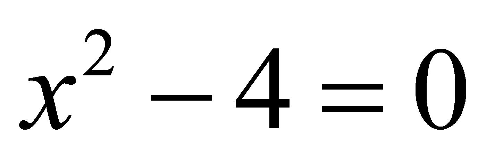
D．
【答案】A
【知识点】一元一次方程的定义
【分析】本题考查了一元一次方程的定义，解题的关键是掌握判断一元一次方程要分为两步：（1）判断是否是整式方程；（2）对整式方程化简，化简后判断是否只含有一个未知数，并且未知数的指数是1只含有一个未知数．
【详解】解：A．符合一元一次方程的定义，是一元一次方程，故正确，符合题意；
B．含有两个未知数，是二元一次方程，故错误，不符合题意；
C．未知数的最高次数是2，是一元二次方程，故错误，不符合题意；
D．分母含有未知数，是分式方程，故错误，不符合题意．
故选：A．
【变式1】（24-25七年级上·黑龙江哈尔滨·阶段练习）下列方程中，是一元一次方程的是（ ）
A． B．
B．
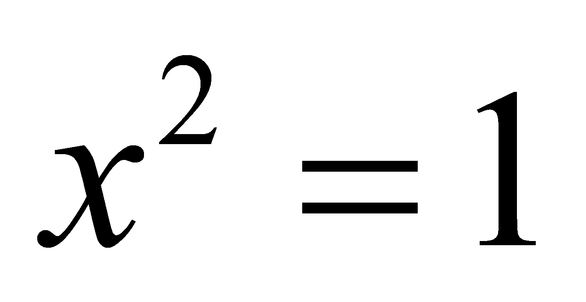
C． D．
D．
【答案】A
【知识点】一元一次方程的定义
【分析】本题考查了一元一次方程的定义．一元一次方程中只含有一个未知数，未知数的最高次数为1且两边都是整式．根据一元一次方程的定义判断各选项即可．
【详解】解：A、是一元一次方程，符合题意；
B、未知数的次数是2，不是一元一次方程，不符合题意；
C、含有两个未知数，不是一元一次方程，不符合题意；
D、不是整式方程，不是一元一次方程，不符合题意；
故选：A
【变式2】（23-24七年级下·四川宜宾·阶段练习）已知下列方程：（1） ；（2）
；（2）
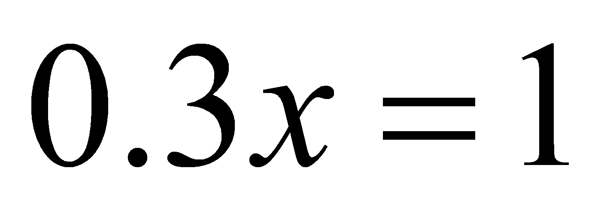
；（3） ；（4）
；（4） ； （5）
； （5） ；（6）
；（6） ．其中一元一次方程的个数有（ ）
．其中一元一次方程的个数有（ ）A．2 B．5 C．4 D．3
【答案】D
【知识点】一元一次方程的定义
【分析】本题主要考查了一元一次方程的定义，解题的关键是熟练掌握一元一次方程的定义，“只含有一个未知数，且未知数的指数是1，一次项系数不是0”．根据一元一次方程的定义进行判断即可．
【详解】解：（1）是分式方程，故（1）不符合题意；
（2），即
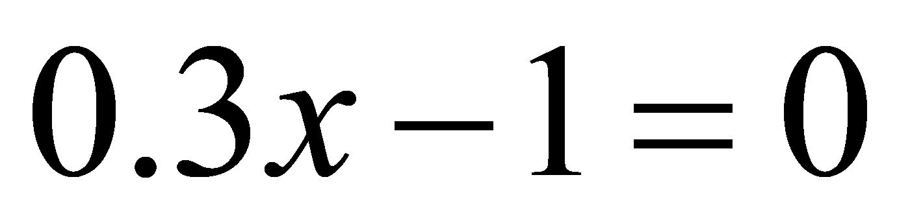
，符合一元一次方程的定义，故（2）符合题意；（3） ，即
，即 ，符合一元一次方程的定义，故（3）符合题意；
，符合一元一次方程的定义，故（3）符合题意；
（4）的未知数的最高次数是2，它属于一元二次方程，故（4）不符合题意；
（5），即
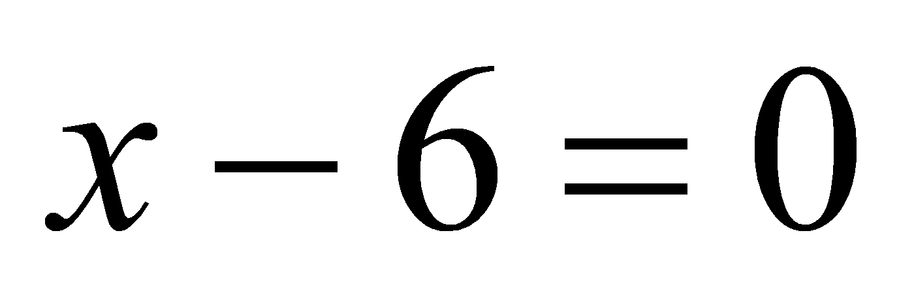
，符合一元一次方程的定义，故（5）符合题意；（6） 中含有2个未知数，属于二元一次方程．故（6）不符合题意．
中含有2个未知数，属于二元一次方程．故（6）不符合题意．
综上所述，一元一次方程的个数是3个．
故选：D．
【变式3】（23-24七年级上·广东汕头·期末）已知下列方程：① ；②
；② ；③
；③ ；④
；④ ；⑤
；⑤ ，其中一元一次方程有（ ）
，其中一元一次方程有（ ）
A．2个 B．3个 C．4个 D．5个
【答案】B
【知识点】一元一次方程的定义
【分析】本题主要考查了一元一次方程的一般形式，只含有一个未知数，且未知数的指数是1，一次项系数不是0，这是这类题目考查的重点．只含有一个未知数（元 ，并且未知数的指数是1（次的方程叫做一元一次方程．它的一般形式是
，并且未知数的指数是1（次的方程叫做一元一次方程．它的一般形式是 ，
， 是常数且
是常数且 ．
．
【详解】解：①不是整式方程，不是一元一次方程；
②是一元一次方程；
③是一元一次方程；
④，函数2个未知数，不是一元一次方程；
⑤是一元一次方程．
一元一次方程有：②③⑤共3个．
故选：B
题型04 根据一元一次方程求参数的值
【典例4】（24-25七年级上·黑龙江哈尔滨·阶段练习）已知
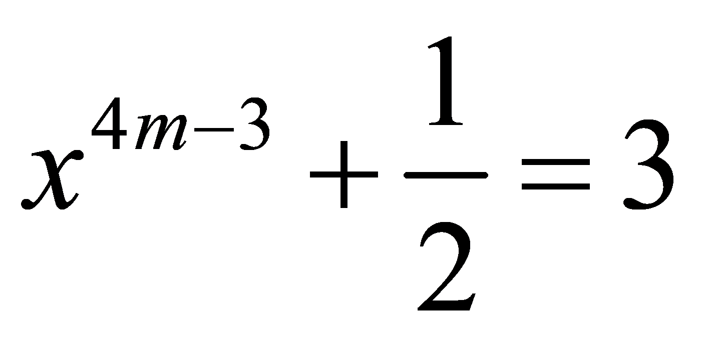
是关于的一元一次方程，那么 ．
．【答案】1
【知识点】一元一次方程的定义
【分析】本题考查一元一次方程的定义：等号两边是整式，只有一个未知数且未知数的次数是1的方程叫一元一次方程，根据定义列式求解即可得到答案
【详解】解：∵是关于的一元一次方程，
∴
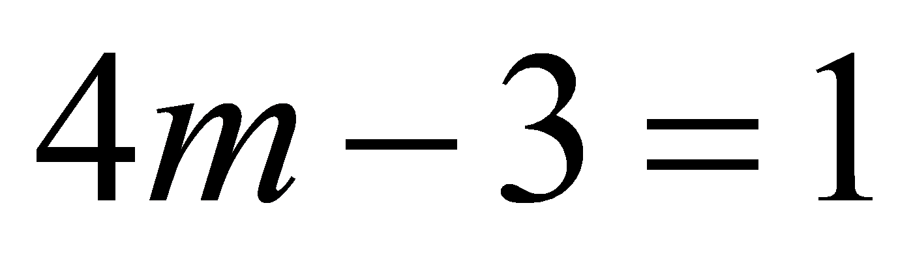
，∴ ，
，
故答案为：1．
【变式1】（23-24七年级上·湖南长沙·期末）已知 是关于的一元一次方程，则
是关于的一元一次方程，则 的值为 ．
的值为 ．
【答案】
【知识点】一元一次方程的定义
【分析】本题主要考查了一元一次方程的定义，根据一元一次方程的定义列出关于m的方程求解即可得出答案．
【详解】解：∵是关于的一元一次方程，
∴ 且
且 ，
，
解得：，
故答案为：．
【变式2】（24-25九年级上·甘肃兰州·阶段练习）已知关于的方程 是一元一次方程，则 ．
是一元一次方程，则 ．
【答案】
【知识点】一元一次方程的定义
【分析】本题考查了一元一次方程，根据一元一次方程的定义可得
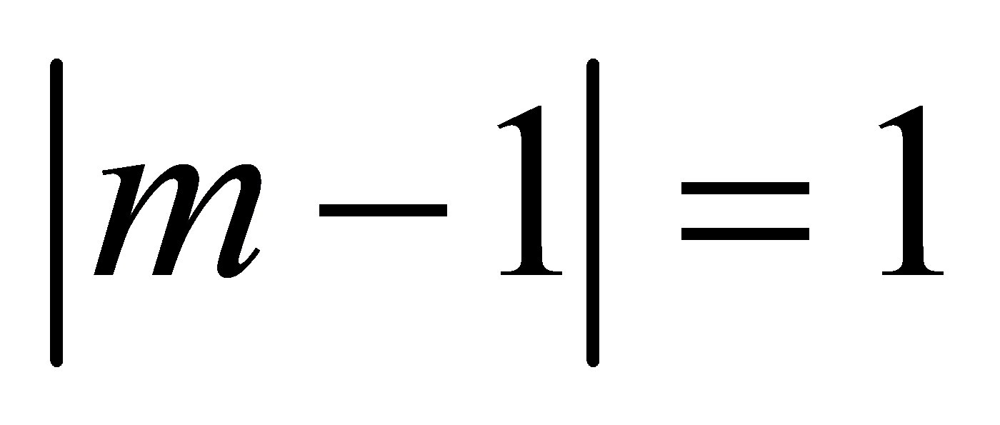
且 ，据此即可求解，掌握一元一次方程的定义是解题的关键．
，据此即可求解，掌握一元一次方程的定义是解题的关键．【详解】解：∵关于的方程是一元一次方程，
∴且，
解得 ，
，
故答案为：．
【变式3】（23-24七年级上·全国·单元测试）若关于的方程
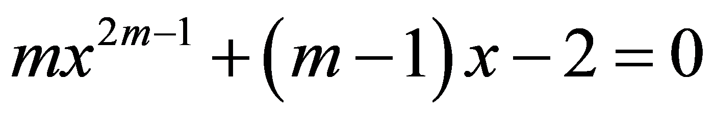
是一元一次方程，则的值为 ．【答案】或
【知识点】一元一次方程的定义
【分析】本题主要考查了一元一次方程的一般形式，只含有一个未知数，且未知数的指数是1，一次项系数不是0，这是这类题目考查的重点．根据一元一次方程的一般形式即可判定有 种情况，分别讨论①当
种情况，分别讨论①当 且时，②当且时，③当
且时，②当且时，③当 时是否满足该方程为一元一次方程即可．
时是否满足该方程为一元一次方程即可．
【详解】解： 关于的方程是一元一次方程，
关于的方程是一元一次方程，
可考虑三种情况，
①当且时，
即且 ，
，
则 ，解得：，
，解得：，
此时，故排除；
②当且时，
即且，
 ，符合条件；
，符合条件；
③当即时，
，符合条件；
综上：的值为或，
故答案为：或．
题型05 判断是否是一元一次方程的解
【典例5】（24-25七年级上·黑龙江哈尔滨·阶段练习）下列方程中，解为的是（ ）
A． B．
B．
C． D．
D．
【答案】B
【知识点】方程的解
【分析】此题主要考查了一元一次方程的解．直接利用一元一次方程的解的意义分别判断得出答案．
【详解】解：A、当时， ，故此选项不符合题意；
，故此选项不符合题意；
B、当时，
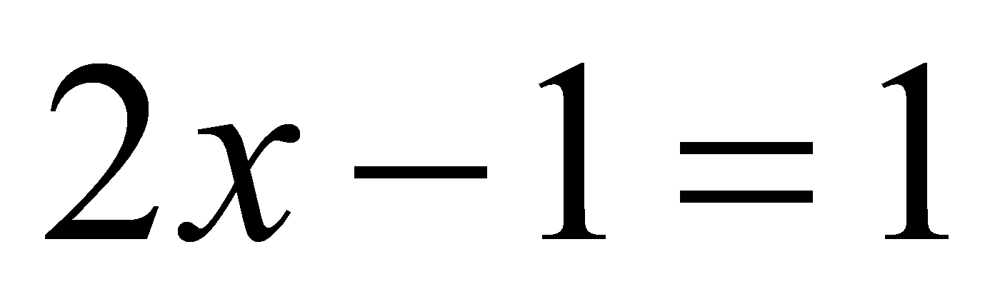
，故此选项符合题意；C、当时，
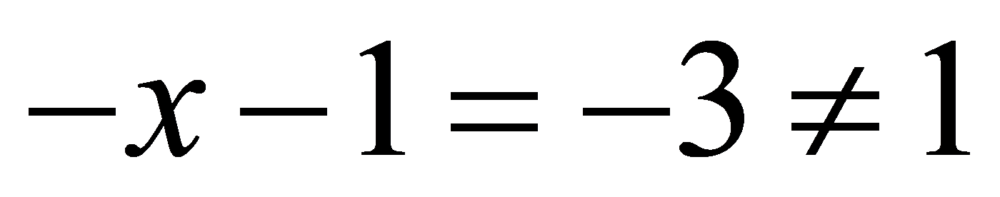
，故此选项不符合题意；D、当时，
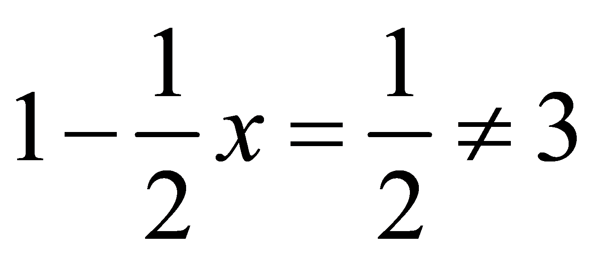
，故此选项不符合题意．故选：B．
【变式1】（23-24七年级下·吉林长春·期中）下列方程中，解为 的是（ ）
的是（ ）
A． B．
B． C．
C． D．
D．
【答案】C
【知识点】方程的解
【分析】本题考查了一元一次方程的解，把代入每个方程，看看方程左右两边是否相等即可，能熟记方程的解的定义（使方程左右两边相等的未知数的值叫方程的解）是解此题的关键．
【详解】解：A．把代入方程，得左边 ，右边
，右边 ，左边
，左边 右边，
右边，
所以不是方程的解，故本选项不符合题意；
B．把代入方程，得左边 ，右边
，右边 ，左边右边，
，左边右边，
所以不是方程的解，故本选项不符合题意；
C．把代入方程 ，得左边
，得左边 ，右边
，右边
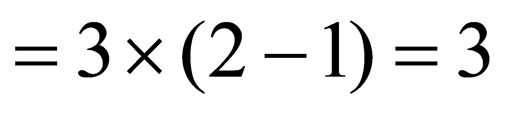
，左边 右边，
右边，所以是方程的解，故本选项符合题意；
D．把代入方程，得左边 ，右边
，右边 ，左边右边，
，左边右边，
所以不是方程的解，故本选项不符合题意．
故选：C．
【变式2】（24-25七年级上·黑龙江哈尔滨·阶段练习）下列方程中，解是 的方程是（ ）
的方程是（ ）
A． B．
B．
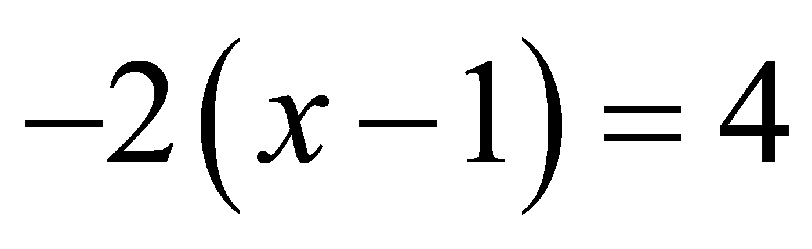
C． D．
D．
【答案】B
【知识点】方程的解
【分析】本题考查了一元一次方程的解，掌握方程的解能够使方程两边左右相等是解题关键．将分别代入方程计算即可．
【详解】解：A、
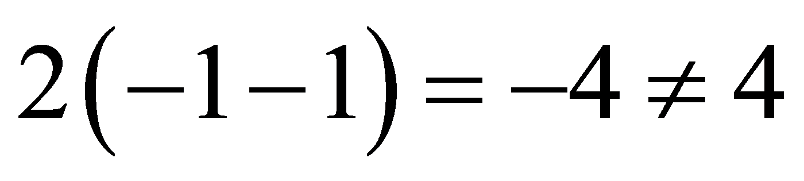
，不符合题意；B、
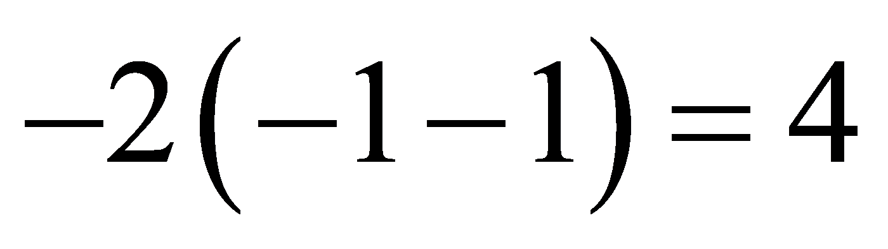
，符合题意；C、
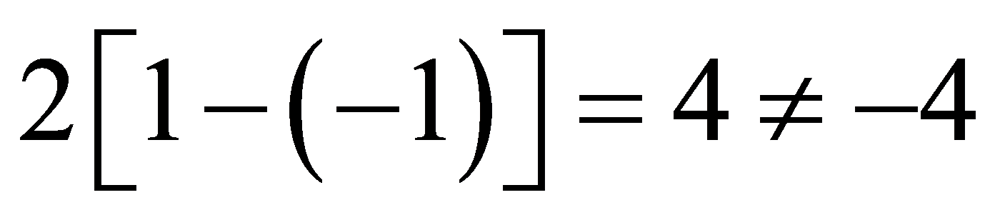
，不符合题意；D、 ，不符合题意；
，不符合题意；
故选：B．
【变式3】（23-24七年级上·江苏苏州·期末）下列方程中，解是 的是（ ）
的是（ ）
A． B．
B．
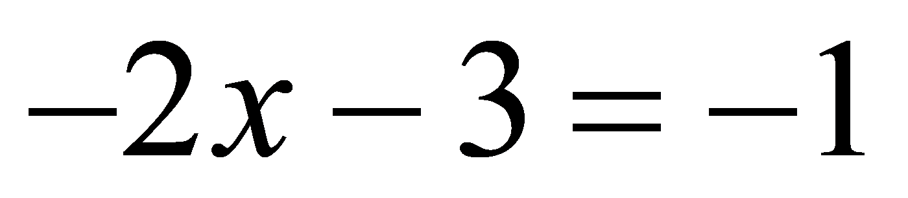
C．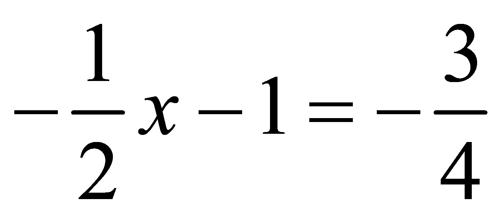
D．
【答案】D
【知识点】方程的解
【分析】本题主要考查了一元一次方程的解，牢记方程的解的定义“使方程中等号左右两边相等的未知数的值，就是方程的解”是解题的关键．
分别将依次代入每个方程，若等式左右两边相等，则为方程的解．
【详解】解：分别将依次代入每个方程，
A. 左边 ，右边
，右边 ，
，
左边右边，
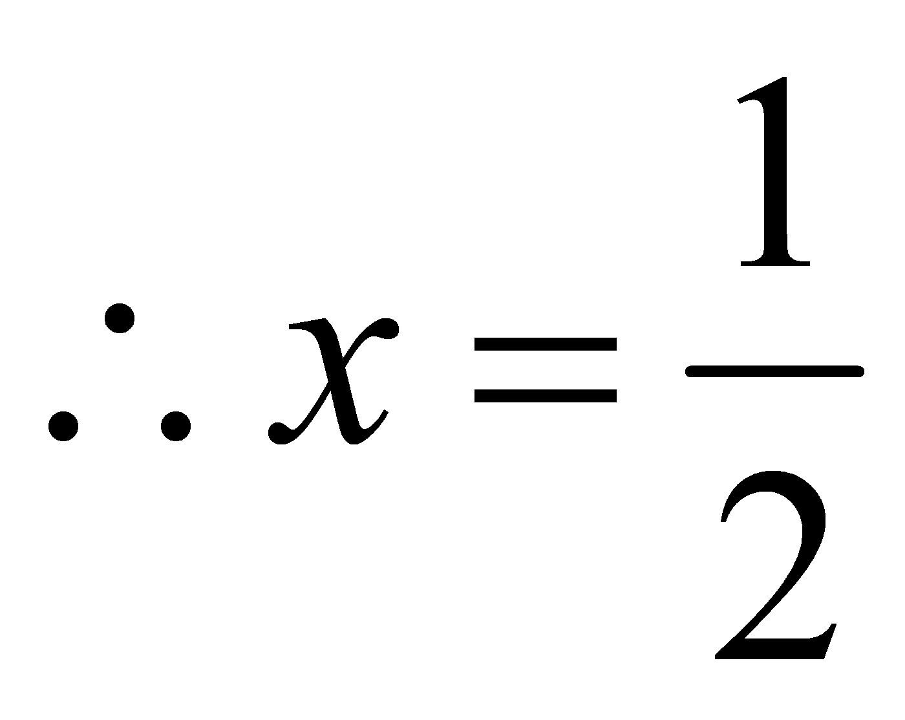
不是方程的解；B. 左边 ，右边，
，右边，
左边右边，
不是方程的解；
C. 左边 ，右边
，右边 ，
，
左边右边，
不是方程的解；
D. 左边 ，右边，
，右边，
左边右边，
是方程的解；
故选： ．
．
题型06 已知一元一次方程的解求参数的值
【典例6】（23-24七年级下·四川泸州·开学考试）若是方程 的解，则
的解，则 ．
．
【答案】1
【知识点】方程的解
【分析】本题考查了方程的解，解题的关键是掌握使方程两边相等的未知数的值是方程的解．将代入原方程进行解答即可．
【详解】解：把代入得：
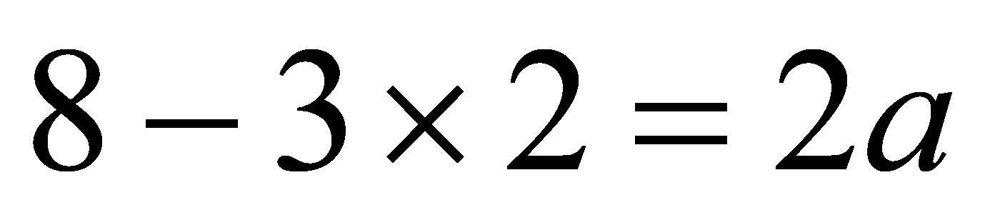
，解得： ，
，
故答案为：1．
【变式1】（23-24七年级上·江苏常州·期末）是方程 的解，则的值是 ．
的解，则的值是 ．
【答案】
【知识点】方程的解、解一元一次方程（一）——合并同类项与移项
【分析】此题考查了一元一次方程的解，将代入方程，再解方程即可，解题的关键是正确理解方程的解的概念及应用．
【详解】把代入方程得， ，
，
解得： ，
，
故答案为：．
【变式2】（23-24七年级下·河南驻马店·期末）若关于x的方程 的解为， 则k的值为 ．
的解为， 则k的值为 ．
【答案】1
【知识点】方程的解
【分析】本题考查方程的解，将代入方程，进行求解即可．
【详解】解：把，代入，得： ，
，
∴ ；
；
故答案为：1．
【变式3】（23-24七年级上·全国·单元测试）是方程
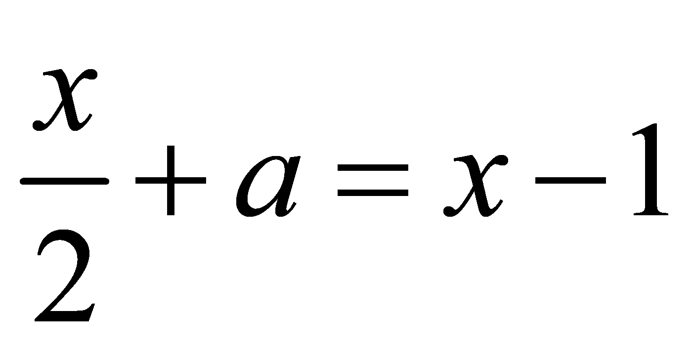
的解，则 ．【答案】
【知识点】方程的解
【分析】本题主要考查了一元一次方程的解，使一元一次方程左右两边相等的未知数的值叫做一元一次方程的解．根据一元一次方程的解的概念解答即可．
【详解】∵是方程的解，
∴
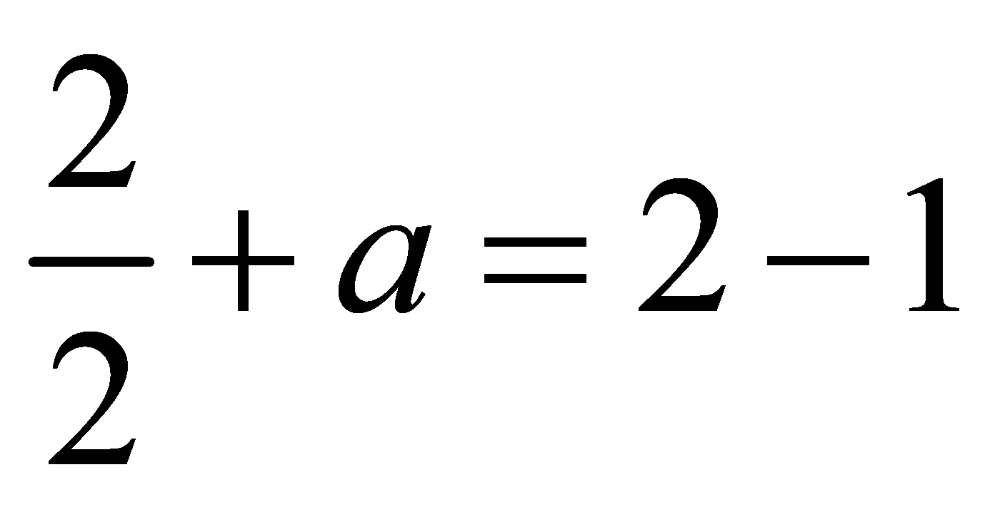
，解得 ，
，
故答案为：．
题型07 已知一元一次方程的解求代数式的值
【典例7】（23-24七年级上·广东佛山·期末）若是方程 的解，则
的解，则 的值为 ．
的值为 ．
【答案】2035
【知识点】已知式子的值，求代数式的值、方程的解
【分析】本题考查一元一次方程的解，解题的关键是把解代入方程中，得到代数式．把代入方程，得出 ，进而可得
，进而可得 ，然后整体代入计算即可．
，然后整体代入计算即可．
【详解】解：∵是方程的解，
∴，
∴
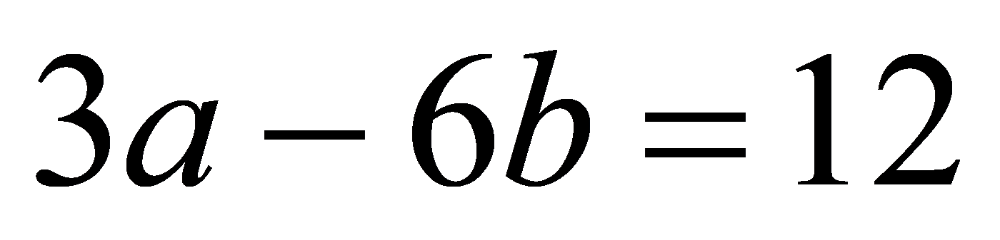
，即，∴
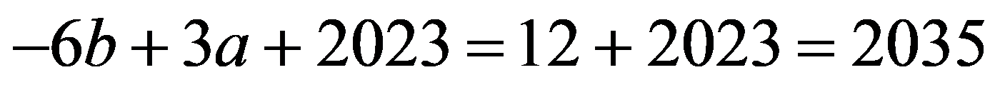
，故答案为：2035．
【变式1】（23-24七年级上·四川成都·期末）若关于x的方程 的解是
的解是 ，则
，则 的值为 ．
的值为 ．
【答案】
【知识点】方程的解
【分析】本题考查了方程解的概念，将代入方程，即可求解．
【详解】解：关于x的方程的解是，
将代入方程，有 ，
，
整理得 ，则
，则 ，
，
故答案为：．
【变式2】（24-25九年级上·全国·课后作业）已知关于x的一元一次方程 的解是，则
的解是，则 的值为 ．
的值为 ．
【答案】0
【知识点】方程的解
【详解】把代入方程中得， ，即
，即 ，
，
∴ ．
．
【变式3】（23-24七年级上·陕西西安·阶段练习）如果 是方程
是方程 的解，那么
的解，那么
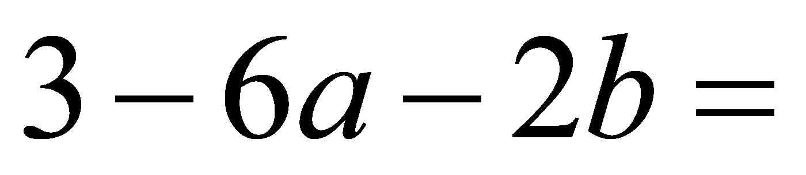
．【答案】1
【知识点】方程的解
【分析】本题考查了一元一次方程的解，先把代入方程得到
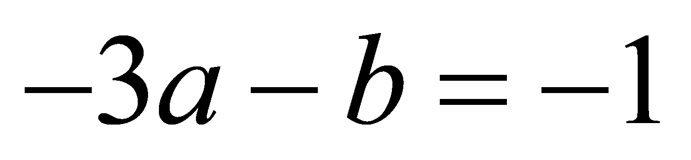
，再把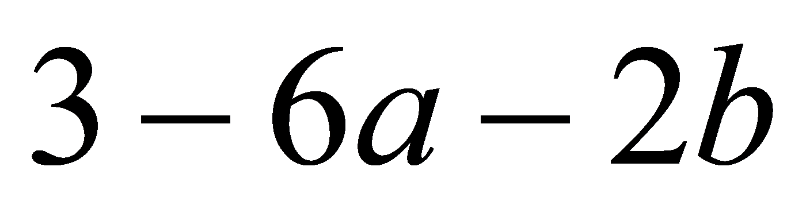
变形为，然后利用整体代入的方法计算．【详解】解：是方程的解，
，
．
故答案为：1．

一、单选题
1．（23-24七年级下·四川乐山·期末）下列各式中，是方程的是（ ）
A． B．
B． C． D．
C． D．
【答案】D
【知识点】判断各式是否是方程
【分析】本题考查了方程的概念，根据方程的定义逐项判断即可，掌正确理解方程的定义是解题的关键．
【详解】 、，不是方程，不符合题意；
、，不是方程，不符合题意；
 、是代数式，不是方程，不符合题意；
、是代数式，不是方程，不符合题意；
 、是不等式，不符合题意；
、是不等式，不符合题意；
 、是方程，符合题意；
、是方程，符合题意；
故选：．
2．（24-25七年级上·河南漯河·开学考试）下列方程中，（ ）的解是 ．
．
A． B．
B． C．
C． D．
D．
【答案】D
【知识点】方程的解
【分析】本题考查了方程的解的定义，使方程左右两边相等的未知数的值叫方程的解，熟知方程的解的定义是解题关键．根据方程解的定义逐项代入即可判断．
【详解】解：当时，左边，左边 右边，所以不是原方程的解，故原选项不合题意；
右边，所以不是原方程的解，故原选项不合题意；
当时，左边 ，左边右边，所以不是原方程的解，故原选项不符合题意；
，左边右边，所以不是原方程的解，故原选项不符合题意；
当时，左边，左边右边，所以不是原方程的解，故原选项不合题意；
当时，左边，左边右边，所以是原方程的解，故原选项合题意．
故选： ．
．
3．（2024七年级上·北京·专题练习）如果关于 的方程
的方程 是一元一次方程．那么
是一元一次方程．那么 ，
， 应满足的条件是（ ）
应满足的条件是（ ）
A． ，
， B．
B． ，
， C．
C． ， D．
， D． ，
，
【答案】C
【知识点】一元一次方程的定义
【分析】本题考查了一元一次方程的定义，能根据一元一次方程的定义得出 且是解此题的关键，注意：只含有一个未知数，并且所含未知数的项的最高次数是1的整式方程叫一元一次方程．
且是解此题的关键，注意：只含有一个未知数，并且所含未知数的项的最高次数是1的整式方程叫一元一次方程．
【详解】解： 关于的方程是一元一次方程，
关于的方程是一元一次方程，
且，
且．
故选：C
4．（24-25九年级上·重庆·阶段练习）关于x的一元二次方程的一个解是 ，则
，则 （ ）
（ ）
A．2025 B．2024 C．2023 D．2022
【答案】A
【知识点】已知字母的值 ，求代数式的值、方程的解
【分析】本题考查了一元二次方程的解的概念，使方程两边成立的未知数的值叫方程的解．
利用一元二次方程解的定义得到 ，然后再对所求代数式变形，最后整体代入计算即可．
，然后再对所求代数式变形，最后整体代入计算即可．
【详解】解：∵关于x的一元二次方程的一个解是，
∴，即，
∴．
故选A．
5．（23-24六年级下·上海·期中）式子① ，②，③，④，⑤中，是一元一次方程有（ ）
，②，③，④，⑤中，是一元一次方程有（ ）
A．1个 B．2个 C．3个 D．4个
【答案】B
【知识点】一元一次方程的定义
【分析】本题考查了一元一次方程的定义，一元一次方程指只含有一个未知数、未知数的最高次数为1且两边都为整式的等式，根据一元一次方程的定义逐项判断即可得出答案．
【详解】解：①不是一元一次方程；
②不是一元一次方程；
③不是一元一次方程；
④将整理得，是一元一次方程；
⑤是一元一次方程，
故是一元一次方程有④⑤，共 个，
个，
故选：B．
二、填空题
6．（24-25七年级上·全国·课后作业）试写出一个解为的一元一次方程： ．
【答案】（答案不唯一）
【知识点】一元一次方程的定义、方程的解
【分析】本题考查了一元一次方程的解，熟练掌握一元一次方程的解的含义是解题的关键．
根据一元一次方程的解确定一元一次方程即可．
【详解】解：根据题意得：，
故答案为：．
7．（24-25七年级上·黑龙江哈尔滨·阶段练习）x与6的和的2倍等于x的3倍，用方程表示数量关系为 ．
【答案】
【知识点】列方程
【分析】本题考查了列一元一次方程，理解题意是解题的关键．根据x与6的和的2倍，即为，x的3倍，即为3x，根据题意列出方程即可求解．
【详解】解：依题意得，，
故答案为：．
8．（23-24七年级上·甘肃武威·期末）已知下列各式：
① ；②；③；④
；②；③；④ ；⑤；⑥；⑦
；⑤；⑥；⑦ ．
．
其中方程有 ，一元一次方程有
【答案】 ①②③⑤⑦ ②⑦
【知识点】一元一次方程的定义、判断各式是否是方程
【分析】此题主要考查了方程的定义，一元一次方程的定义，正确理解方程的定义和一元一次方程的定义是解决问题的关键；
根据方程的定义对题目中给出的式子逐一进行判断可得出答案；根据一元一次方程的定义对题目中给出的式子逐一进行判断可得出答案．
【详解】解：根据方程的定义得：①②③⑤⑦是方程，
根据一元一次方程的定义得：②⑦是一元一次方程，
故答案为：①②③⑤⑦；②⑦．
9．（23-24七年级下·湖南衡阳·阶段练习）已知关于的方程是一元一次方程，则 ．
【答案】
【知识点】一元一次方程的定义
【分析】本题考查了一元一次方程的定义，掌握一元一次方程的定义是解题的关键．根据一元一次方程的定义即可求解，只含有一个未知数(元)，并且未知数的指数是1(次)的整式方程叫做一元一次方程．
【详解】解：∵关于x的方程是一元一次方程，
∴且，
解得：，
故答案为：．
10．（22-23七年级上·重庆渝中·阶段练习）若 是关于的一元一次方程的解，则的值是 ．
是关于的一元一次方程的解，则的值是 ．
【答案】8
【知识点】方程的解
【分析】把代入方程可得，再利用整体代入的方法计算即可．
【详解】解：把代入方程可得，
∴
=
=
=8．
故答案为：8．
【点睛】此题考查了一元一次方程的解，方程的解即为能使方程左右两边相等的未知数的值．
三、解答题
11．（23-24七年级上·安徽淮南·期中）检验括号内的未知数的值是否为方程的解．
 （
（ ，）
，）
【答案】不是方程的解，是方程的解
【知识点】方程的解
【分析】本题主要考查了方程的解，分别把，代入方程两边，判断两边是否相等，即可解答．
【详解】解：把代入方程，左边，右边，
∵左边右边，
∴不是方程的解．
把代入方程，左边，右边，
∵左边右边，
∴是方程的解．
12．（21-22七年级上·陕西渭南·阶段练习）用方程表示下列语句所表示的相等关系：
(1)七年级学生人数为n，其中男生占 ，女生有人；
，女生有人；
(2)一种商品每件的进价为a元，售价为进价的 倍，现每件又降价
倍，现每件又降价 元，现售价为每件
元，现售价为每件 元．
元．
【答案】(1)
(2)
【知识点】列方程
【分析】（1）根据题意，男生人数为，也可以表示为，因此列出方程即可；
（2）根据题意，售价为，现售价为，因为现售价为每件元，即可列出方程．
【详解】（1）解：根据题意，
（2）解：根据题意，
，
【点睛】本题考查了列一元一次方程等知识内容，正确理解并列出等价的方程是解题的关键．
13．（22-23六年级上·全国·单元测试）根据下列题干设未知数列方程，并判断它是不是一元一次方程．
(1)一个数的 倍比它的倍多，求这个数．
倍比它的倍多，求这个数．
(2)从 长的木条上截去段同样长的木条还剩下
长的木条上截去段同样长的木条还剩下 长的短木条，截去的木条每段长多少
长的短木条，截去的木条每段长多少
(3)如图，小颖种了一株树苗，开始时树苗高为 ，栽种后每周长高约
，栽种后每周长高约 ，大约几周后树苗长高到
，大约几周后树苗长高到 ？
？
【答案】(1)，是一元一次方程
(2)，是一元一次方程
(3)，是一元一次方程
【知识点】一元一次方程的定义
【分析】（1）设这个数为，根据题意列出方程即可；
（2）设截去的木条每段长为 ，根据题意列出方程即可，
，根据题意列出方程即可，
（3）设周后树苗长高到，根据题意列出方程即可．
【详解】（1）解：设这个数为，依题意得，
，是一元一次方程，
（2）解：设截去的木条每段长为，根据题意得，
，是一元一次方程，
（3）解：设周后树苗长高到，根据题意得，
，是一元一次方程．
【点睛】本题考查了一元一次方程的应用，找到等量关系列出方程是解题的关键．
14．（23-24七年级上·湖南怀化·期末）已知关于x的方程是一元一次方程．
(1)求m的值；
(2)已知：是该一元一次方程的解，求n的值．
【答案】(1)
(2)
【知识点】方程的解、一元一次方程的定义
【分析】本题考查一元一次方程的定义，方程的解．
（1）根据一元一次方程的定义可得，，求解即可；
（2）把代入方程，求解即可．
【详解】（1）∵关于x的方程是一元一次方程，
∴且
∴；
（2）由（1）得，该一元一次方程为，
∵是该方程的解，
∴，
∴．
15．（23-24六年级上·山东威海·期末）已知 是关于的一元一次方程．
是关于的一元一次方程．
(1)求 的值；
的值；
(2)若方程的解为 ，求此时的值．
，求此时的值．
【答案】(1) ；
；
(2)．
【知识点】一元一次方程的定义、方程的解
【分析】（ ）根据一元一次方程的定义进行求解即可；
）根据一元一次方程的定义进行求解即可；
（）先由求出方程，再把代入即可；
本题考查一元一次方程的定义和一元一次方程的解，解题的关键是正确理解一元一次方程的定义，即只含有一个未知数、未知数的最高次数为且两边都为整式的等式，方程的解的概念及应用．
【详解】（1）解：由题意得且 ，
，
∴ 或且．
或且．
∴；
（2）把代入方程得：，
当时，得，
解得．
16．（2024七年级下·北京·专题练习）已知 是关于x的方程的解．
是关于x的方程的解．
(1)求k的值；
(2)在（1）的条件下，已知线段 ，点C是线段
，点C是线段 上一点，且，若点D是
上一点，且，若点D是 的中点，求线段
的中点，求线段 的长．
的长．
(3)在（2）的条件下，已知点A所表示的数为 ，点B所表示的数为4，有一动点P从点A开始以2个单位长度每秒的速度沿数轴向左匀速运动，同时另一动点Q从点B开始以4个单位长度每秒的速度沿数轴向左匀速运动，当时间为多少秒时，有？
，点B所表示的数为4，有一动点P从点A开始以2个单位长度每秒的速度沿数轴向左匀速运动，同时另一动点Q从点B开始以4个单位长度每秒的速度沿数轴向左匀速运动，当时间为多少秒时，有？
【答案】(1)
(2)线段的长为
(3)当时间为或 秒时，有
秒时，有
【知识点】线段中点的有关计算、方程的解、数轴上的动点问题、数轴上两点之间的距离
【分析】本题考查方程的解的定义，线段的和差，数轴上的动点问题，数轴上两点之间的距离．
（1）把代入方程，转化为关于k的方程，求解即可；
（2）当时， ，则，
，则， ，根据D为的中点，即可求解；
，根据D为的中点，即可求解；
（3）同（2）可求得点D表示的数为，当点P和点Q运动x秒时，点P表示的数是，点Q表示的数分别是，根据绝对值的几何意义可得，，由即可得到方程，求解即可．
【详解】（1）∵是关于x的方程的解，
∴，
解得：；
（2）如图，
当时，，，
∴，，
∵D为的中点，
∴
即线段的长为；
（3）∵点A所表示的数为，点B表示的数是4，
∴， ，
， ，
，
∵点D是的中点，
∴，
∴点D表示的数为．
当点P和点Q运动x秒时，点P表示的数是，点Q表示的数分别是．
∴，，
∵，
∴，
即或，
解得或
∴当时间为或秒时，有．